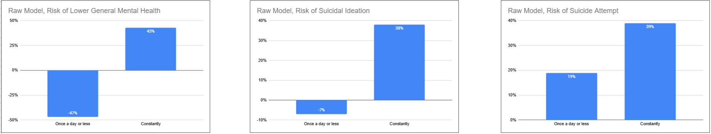
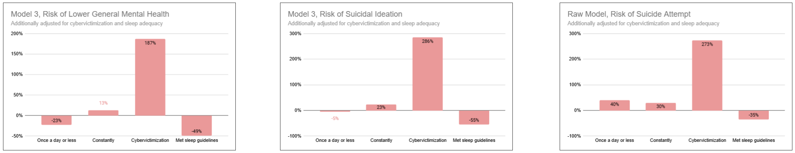
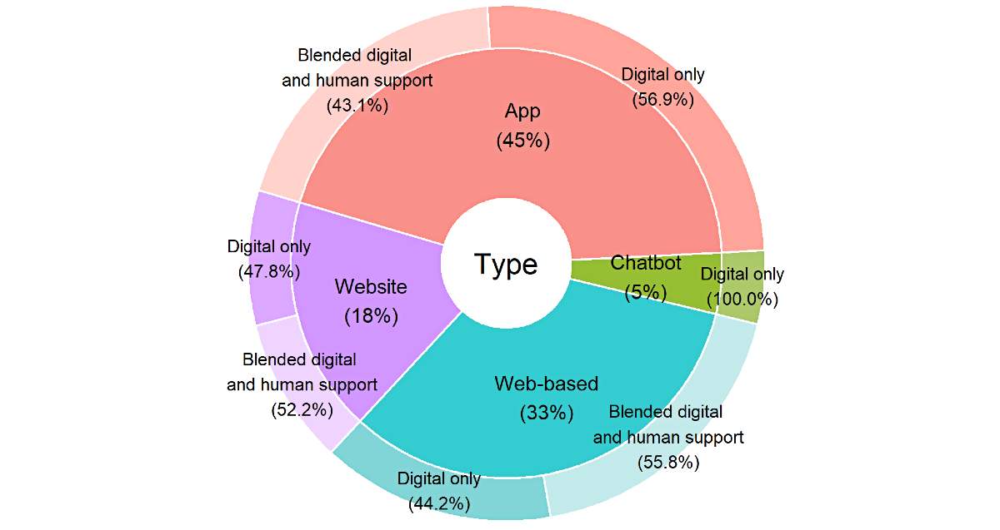

Research
"Studying existing mental health platforms, apps, and community resources aimed at youth. Identifying what makes them successful or unsuccessful, both from a technical and emotional perspective. Always incorporating any fitting evidence-based therapeutic techniques. The three steps to helping you."
Introduction
In recent years people have, by age 25, one in five been diagnosed with a mental illness, with most symptoms beginning before 18.
Globally, one in seven adolescents faces a mental health condition, and suicide remains among the leading causes of death for those aged 15-29.
Urgent Demand and Changing Access
Digital platforms bridge gaps in care as rates of physician visits and medication use for children and youth have risen, while hospitalizations and emergency department visits have declined—reflecting a shift to community-based and easily accessible supports.
Still, many youth, especially those from vulnerable or underserved populations, do not receive the full care they need, highlighting an urgent demand for innovative, effective, and engaging solutions.
Social and Emotional Impact
Mental illness not only impacts physical health but also increases the risk of poor educational, economic, and social outcomes in adulthood.
Addressing these conditions early—through technology that meets youth where they are—can reduce stigma, encourage help-seeking, and offer vital peer and professional support in ways traditional systems often cannot.
By creating relevant software tools, society can offer youth immediate support, skill-building, and crisis intervention, ultimately improving wellbeing, resilience, and life prospects for a generation facing unprecedented mental health challenges.
The Problem
Youth mental health today is facing a critical crisis characterized by rising loneliness, social disconnection, anxiety, and self-doubt. These feelings often accumulate over time and may not display immediate or obvious symptoms. However, left unaddressed, they can snowball into severe mental health conditions, including depression, self-harm, and suicidal behaviors, which have been increasing at alarming rates globally.
Increasing Loneliness and Social Disconnect
Despite living in an interconnected digital age, many young people report deepening feelings of isolation and lack of meaningful social support. The growth of screen time and social media use, while increasing virtual connectedness, paradoxically exacerbates social disconnection and feelings of inadequacy and loneliness. Young people often struggle to build robust interpersonal relationships, which are crucial for emotional resilience.
Anxiety and Self-Doubt as Drivers
21% of adolescents report experiencing symptoms of anxiety, with many experiencing chronic stress related to academic pressures, uncertain futures, and social challenges. This anxiety is often combined with pervasive self-doubt that undermines confidence and coping capability, creating a cycle of avoidance, withdrawal, and emotional distress. These internal battles frequently go unseen and untreated for extended periods.
Suicide and Self-Harm: The Tragic Outcomes
The escalation of untreated anxiety and social isolation contributes substantially to increasing self-harm and suicide risk among youth. Globally, suicide is one of the leading causes of death for young people aged 15–29, with rising emergency visits for self-injury reflecting the depth of distress. For example, in the US, 20% of high school students seriously considered suicide in the past year, and 9% have attempted it.
In the preceding raw data, it is shown that there is an exponential correlation between the use of social media and higher risk of mental health issues, thoughts of suicide, and event actual suicide attempts. It also shows that the less one uses social media, the lower the risk. It becomes even more clear when we adjust this data with varioius phenomena that people suffer through.
There is an almost 300% increase in risk of suicidal thoughts once cyberbullying is brought into the equation. And it is known that cyberbullying percentage has been increasing over time and has recently just overtaken the percentage of school bullying in the US.
Social System Failures
The crisis underscores critical failures in social systems to adequately prevent, identify, and treat emerging mental health challenges among youth. Although awareness has increased, the availability, accessibility, and timeliness of evidence-based mental health care remain insufficient. Many young people face barriers including stigma, lack of culturally sensitive resources, and inequitable access dependent on socioeconomic status or geography.
Cumulative and Invisible Impact
A significant challenge is that many mental health problems develop gradually; emotional distress and mild symptoms can accumulate unnoticed until reaching crisis points. Early signs are often subtle, such as withdrawal or decreased performance, which can be overlooked by caregivers and educators. Without early intervention, this cumulative burden can compromise educational attainment, social development, and long-term wellbeing.
Evidence-Based Therapeutic Incorporation
CBT: Stepwise, skill-building digital modules, interactive “choose-your-path” journeys, mood tracking, and journaling, shown to reduce anxiety and depressive symptoms in youth.
Mindfulness: Short guided meditations, breathing exercises, in-app reminders, “calm zone” spaces—effective for real-time anxiety/overwhelm.
Peer Systems: School-specific networks, anonymous matching, scheduled group chats. Emphasizing boundaries, shared experiences, and escalation protocols.
Crisis Pathways: Immediate access to crisis lines, pre-filled personal safety plans, geolocation for local resources, and automated alerting for self-harm warning signs
Key Features of Successful Platforms
Personalization and Adaptive Content: Apps like Neolth create individualized mental health plans based on initial assessments and ongoing user engagement, tailoring interventions and reminders to users’ specific needs and stressors.
Blending Digital and Human Support: Platforms like MOST and WEconnect integrate guided therapy, peer networks, and professional support, allowing real-time communication and a safety net for crisis situations.
Peer Support Systems: Apps such as Mind your Mate and TalkLife focus on peer-to-peer help, providing mental health literacy, communication tools, mood tracking, and quick access to crisis resources, while destigmatizing help-seeking.
Crisis Intervention: Tools like My Mental Health Crisis Plan and Hope by CAMH offer clear crisis navigation, including customizable advance directives and direct links to helplines, ensuring help is available at critical moments.
Evidence-Based Practices: Cognitive Behavioral Therapy (CBT), mindfulness, and guided self-help modules form the clinical backbone of platforms like Maya, Joypop, Headspace, and Breathr, which are shown to improve mood, anxiety, and resilience.
Engagement-Driven Design: Youth-oriented apps use gamification, interactive journeys, character-driven storytelling, and dynamic content—developed in part by youth contributors—to build genuine emotional connection and consistent use.
What Makes Platforms Unsuccessful
Lack of Youth Engagement: Apps designed without youth input often feel irrelevant and are not trusted.
Poor Crisis Integration: Delays in emergency support or inadequate escalation steps lead to safety risks.
Overly Generic or Clinical Language: Fails to connect with users emotionally and culturally.
Inconsistent Privacy & Security: Undermines trust, especially with sensitive peer support platforms.
Our Solution
Exposed Endpapers is a mental health app designed like a pen-pal journal for young people. Each user can only have a few active friends at a time, so they can focus on really meaningful conversations without feeling overwhelmed. Users share their thoughts and feelings through journal entries, and the app’s smart matching system pairs them with someone who will respond with support and understanding.
The app guarantees that everyone who writes something will get a thoughtful reply, helping to reduce feelings of loneliness and making users feel heard. This creates a safe and caring space where young people can express themselves openly and connect with others who understand them.
To keep users motivated, Exposed Endpapers has fun elements, like earning points to unlock new styles and features for their journals. This helps make sharing more enjoyable and encourages people to keep using the app to reflect and grow emotionally.
In short, Exposed Endpapers uses simple, proven ideas like journaling and peer support, combined with easy-to-use technology, to help young people feel less alone and more confident. It focuses on quality connections instead of quantity, which can help ease anxiety, build self-esteem, and create real support for today’s youth.